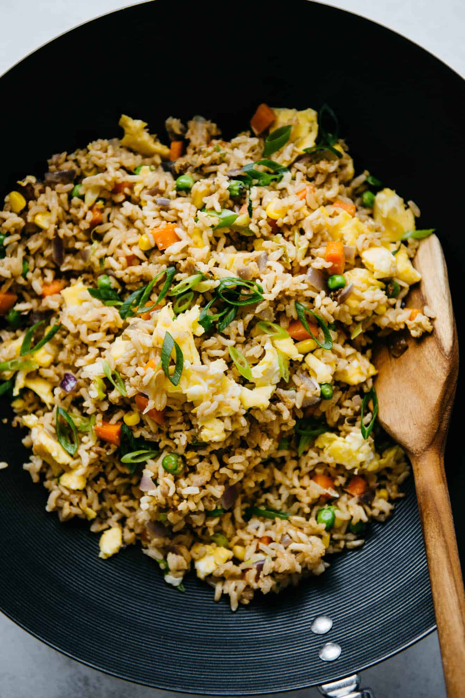

Egg Fried Rice

Oh, egg fried rice! As a foodie, I just love this dish! It's a simple dish that packs a lot of flavor and
texture. The fluffy grains of rice are stir-fried with aromatic spices and fresh ingredients, such as scallions
and garlic, to create a savory base. The addition of eggs, which are beaten and scrambled in the pan before
being incorporated into the rice, elevates the dish to new heights. The eggs add a rich and creamy texture that
complements the tender, yet slightly al dente, rice perfectly.
Ingredients
- 4 large eggs
- 3 tablespoons peanut, vegetable, or olive oil, divided
- 1 cup diced onion, about 1 small onion
- 1 1/2 to 2 cups diced mixed vegetables, such as bell pepper, carrots, zucchini, etc.
- 1/2 cup sliced scallions, white and green parts divided
- pinch of salt
- 4 cups cooked overnight jasmine rice
- 2 1/2 tablespoons soy sauce, use tamari if gluten free
- 1/2 teaspoon five-spice powder
- dash of ground white pepper, optional
- 1 to 2 teaspoons toasted sesame oil
Steps
- Crack the eggs into a small bowl and beat them together.
- Heat a skillet with 1 tablespoon of the oil over medium-high heat. Once the pan is hot, add the beaten eggs
and scramble them for about a minute. Transfer the eggs to a dish and turn off the heat.
- Drizzle the remaining 2 tablespoons of oil into a wok over high heat. Add the onions and cook them for about
1 to 2 minutes, stirring constantly. Add the mixed vegetables and white parts of the scallions and cook for
2 minutes. Season the vegetables with a pinch of salt.
- Add the cooked rice into the pan or wok and cook for several minutes, until the rice is heated through. If
there are large clumps of rice, break them apart with the back of your spatula.
- Add the soy sauce, five-spice powder, dash of white pepper (if using) and sesame oil and stir to distribute
the seasonings. (See note 6) Add the scrambled eggs and stir to mix again. Garnish with remaining sliced
scallions. Serve immediately.